- Driven by electrical power from the HV battery to generate motive force.
- Generates electricity to recharge the HV battery (regenerative braking) during braking or when the accelerator pedal is not depressed.
- Driven by the engine and generates high-voltage electricity in order to charge the HV battery. Also, the MG functions as a starter to start the engine.
| Last Modified: 10-07-2025 | 6.11:8.1.0 | Doc ID: NM100000002MR8Z |
| Model Year Start: 2024 | Model: Tacoma | Prod Date Range: [03/2024 - ] |
| Title: HYBRID / BATTERY CONTROL: HYBRID CONTROL SYSTEM: HYBRID CONTROL; 2024 - 2026 MY Tacoma Tacoma HV [03/2024 - ] | ||
HYBRID CONTROL
FUNCTION OF MAIN COMPONENTS
|
Component |
Function |
||
|---|---|---|---|
|
*1: Models without AVS
*2: Models with AVS *3: Models with headup display |
|||
|
Hybrid Module Assembly |
Motor Generator (MG) |
|
|
|
Hybrid Module Clutch |
The engine and the MG are connected and disconnected based on driving conditions and the SOC. |
||
|
Hybrid Motor Control Inverter Assembly |
Motor Generator ECU (MG ECU) |
Controls the inverter in accordance with signals received from the ECM, operating the MG as either a generator or motor. |
|
|
Inverter |
Converts high-voltage DC (HV battery) into AC (MG) and vice versa (converts AC into DC). |
||
|
DC/DC Converter (HV Converter) |
Reduces the HV battery voltage from DC 288 V to approximately DC 14 V in order to supply electricity to body electrical components, as well as to recharge the auxiliary battery. |
||
|
HV Supply Battery Assembly |
HV Battery (HV Battery Modules) |
|
|
|
Service Plug Grip |
Shuts off the high-voltage circuit of the HV battery when this plug is removed for vehicle inspection or maintenance. |
||
|
Battery Voltage Sensor |
Monitors the conditions of the HV battery such as voltage, current and temperature, and transmits this information to the hybrid vehicle control ECU assembly. |
||
|
No. 1 Traction Battery Device Box Assembly |
System Main Relays (SMRs) |
Connects and disconnects the high-voltage circuit between the HV battery and the hybrid motor control inverter assembly. The hybrid vehicle control ECU assembly controls the SMRs by turning them on or off as appropriate. |
|
|
Battery Current Sensor |
Measures the current of the HV battery. |
||
|
Hybrid Battery Thermistor |
HV Battery Temperature Sensor |
Detects temperatures in the parts of the HV battery. |
|
|
HV Battery Intake Air Temperature Sensor |
Detects the intake air temperature from the battery cooling blower assemblies. |
||
|
Battery Cooling Blower Assembly |
Operates under the control of the hybrid vehicle control ECU assembly in order to cool the HV battery. |
||
|
No. 2 Battery Cooling Blower Assembly |
|||
|
Auxiliary Battery |
When the ignition switch is ACC or ON, the auxiliary battery supplies power to the electrical equipment and ECUs. |
||
|
Battery State Sensor Assembly |
Calculates the current, voltage, temperature, SOC (battery charging percentage) and SOH (battery degradation percentage) of the auxiliary battery. |
||
|
Starter Assembly |
Starts the engine. |
||
|
Radiator Assembly |
Cools the engine and inverter coolant. |
||
|
Inverter Water Pump Assembly (with Motor) |
Operates under the control of the hybrid vehicle control ECU assembly in order to cool the hybrid motor control inverter assembly. |
||
|
Cooling Fan with Controller Motor |
Controls cooling fan operation and fan speed based on signals from the ECM. |
||
|
Interlock Switches
|
Verifies that the upper inverter cover sub-assembly, power cable (floor under wire on the hybrid motor control inverter assembly side) and service plug grip are installed. |
||
|
Power Cable |
Connects the HV supply battery assembly, the hybrid motor control inverter assembly, the hybrid module assembly and the compressor with motor assembly. |
||
|
Compressor with Motor Assembly |
Driven at a speed calculated by the air conditioning amplifier assembly, receives drive requests from the hybrid vehicle control ECU assembly and takes in, compresses and discharges refrigerant. |
||
|
Park/Neutral Position Switch Assembly |
Converts the shift position into electrical signals and sends them to the transmission control ECU assembly. |
||
|
Transmission Floor Shift Assembly |
Transmission Control Switch |
|
|
|
Steering Sensor |
Detects the direction and angle of the steering wheel. |
||
|
Accelerator Pedal Rod with Sensor Assembly |
Converts the accelerator pedal position into an electrical signal and outputs the signal to the ECM. |
||
|
Brake Pedal Stroke Sensor Assembly |
Directly detects the extent of the brake pedal stroke operated by the driver. |
||
|
Stop Light Switch Assembly |
Detects the brake pedal depressing signal. |
||
|
Integration Control and Panel Assembly |
Drive Mode Select |
|
|
|
Tow Haul Mode Select |
|
||
|
Hybrid Vehicle Control ECU Assembly |
|
||
|
ECM |
|
||
|
Brake Actuator Assembly |
No. 2 Skid Control ECU |
|
|
|
Air Conditioning Amplifier Assembly |
Transmits various air conditioning state signals to the hybrid vehicle control ECU assembly. |
||
|
Airbag ECU Assembly |
Transmits the airbag deployment signal to the hybrid vehicle control ECU assembly during a collision. |
||
|
Transmission Control ECU Assembly |
Transmits shift position signals to the ECM. |
||
|
Headup Display (Meter Mirror Sub-assembly)*3 |
Hybrid System Indicator |
Indicates the hybrid system output and charging conditions of the HV battery to inform the driver. |
|
|
Combination Meter Assembly |
READY Indicator |
Informs the driver that the vehicle is ready to be driven. |
|
|
MIL |
Turns on when there is a malfunction in the engine control system. |
||
|
Shift Position Indicator |
Displays the shift position. |
||
|
TOW HAUL Mode Indicator |
Displays the TOW HAUL mode. |
||
|
Drive Mode Indicator |
Displays the drive mode. |
||
|
Multi-information Display |
Displays a warning message corresponding to each system malfunction. |
||
OPERATING CONDITION
(a) Hybrid System Activation (On (READY) State)
(1) The hybrid system can be activated by operating the ignition switch while the brake pedal is being depressed. At this time, the READY indicator flashes until the system check is completed. When the READY indicator turns on, the hybrid system has started and the vehicle is ready to be driven.
(2) Even if the driver turns the ignition switch ON (READY), sometimes the ECM will not start the engine. The engine will only start if conditions such as engine coolant temperature, SOC, HV battery temperature and electrical load require an engine start.
(3) After driving, when the driver stops the vehicle and the shift position is P, the operating the ignition switch allows the engine to continue running. The engine will stop after the SOC, HV battery temperature and electrical load reach a specified level.
NOTICE:
When the hybrid system must be stopped while driving, the system can be forced to stop by pressing and holding the ignition switch for approximately 2 seconds or more or by pushing the ignition switch 3 times or more in a row. At this time, the power source mode will turn ON.
(b) ECO Mode
(1) ECO mode is entered by using drive mode select.
(2) The ECO mode setting is recorded by the ECM. This setting will not be reset when the ignition switch is turned off.
(3) ECO mode will be canceled when drive mode select is switched to any mode other than ECO mode.
(c) Inspection Mode
(1) Inspection mode is entered by using the GTS or the accelerator pedal. For details, refer to the Repair Manual.
(d) Detection of Insulation Resistance Decrease
(1) A leak detection circuit is built into the battery voltage sensor. The leak detection circuit constantly monitors that the insulation resistance between high-voltage circuits and body ground is maintained.
(2) If the insulation resistance decreases below a specified level, a Diagnostic Trouble Code (DTC) is stored, and the driver is informed of the abnormal condition by the multi-information display.
(3) The leak detection circuit has an AC source and causes a small amount of AC to flow to the high-voltage circuit (positive and negative).
(4) AC flows as shown in the following illustration. AC flows via a detection resistor, a capacitor and body ground.
(5) The more vehicle insulation resistance decreases, the more voltage reduces at the detection resistor and the lower the amplitude of the AC waves. The insulation resistance value (tester data name: short wave highest value) is detected based on the amplitude of AC waves.
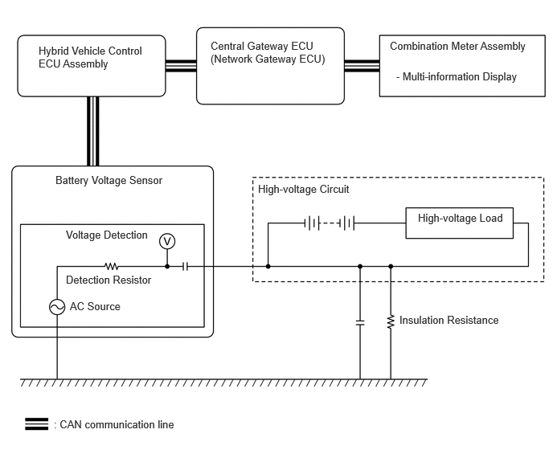SYSTEM CONTROL
Electronic Control of Hybrid System
|
Control |
Outline |
|
|---|---|---|
|
*1: Models with AVS
*2: Models without AVS |
||
|
Hybrid Electrical Vehicle Control |
|
|
|
System Monitoring Control |
The hybrid vehicle control ECU assembly monitors the SOC of the HV battery and the temperature of the HV battery and the MG, and based on this information, the hybrid vehicle control ECU assembly and ECM control these items optimally. |
|
|
System Main Relay (SMR) Control |
To ensure that it is possible to connect and disconnect the high voltage circuits reliably, the hybrid vehicle control ECU assembly controls the 3 SMRs to connect and disconnect the high voltage circuits from the HV battery. The hybrid vehicle control ECU assembly also uses the timing of the operation of the SMRs to monitor the operation of the relay contacts. |
|
|
State of Charge (SOC) Control |
The hybrid vehicle control ECU assembly constantly performs charge/discharge control based on the calculated SOC in order to maintain the SOC within its target range. |
|
|
Inverter Coolant Cooling Control |
In order to cool the hybrid motor control inverter assembly, the hybrid vehicle control ECU assembly regulates the inverter water pump assembly (with motor) in accordance with the signals from the temperature sensor for the inverter coolant. |
|
|
Engine Control |
The ECM calculates the target engine motive force, and controls the Electronic Throttle Control System-intelligent (ETCS-i), fuel injection volume, ignition timing and Dual Variable Valve Timing-intelligent (Dual VVT-i). |
|
|
Motor Generator Main Control |
|
|
|
Inverter Control |
|
|
|
DC/DC Converter Control |
|
|
|
Battery Voltage Sensor Control |
|
|
|
Shift Control |
The transmission control ECU assembly detects the shift position (P, R, N, D ) in accordance with the signals sent by the park/neutral position switch assembly. The ECM detects the shift position (S) based on signals from the transmission control switch. The engine and MG are controlled to align with the selected shift status based on this information and the vehicle status. |
|
|
Skid Control ECU Control |
Regenerative Braking Cooperative Control |
During braking, the No. 2 skid control ECU calculates the required regenerative braking force and transmits a signal to the ECM. Upon receiving this signal, the ECM transmits an actual regenerative braking control value to the No. 2 skid control ECU. Based on this result, the No. 2 skid control ECU calculates and executes the required hydraulic pressure braking force. |
|
TRAC/VSC Cooperative Control |
The No. 2 skid control ECU transmits a request to the ECM to limit motive force while the TRAC or VSC is operating. The ECM controls the engine and the MG in accordance with the present driving conditions in order to suppress the motive force. |
|
|
During Collision Control |
During a collision, if the hybrid vehicle control ECU assembly receives an airbag deployment signal from the airbag ECU assembly, the ECU turns the SMRs off in order to shut off the high voltage power supplied to the hybrid system by the HV battery. |
|
|
Dynamic Radar Cruise Control System Operation Control |
Upon receiving an acceleration and deceleration request signal from the millimeter wave radar sensor assembly, the ECM optimizes the motive forces of the engine and the MG in order to obtain the target vehicle speed. |
|
|
Drive Mode Select Control |
Drive mode select control optimally controls the outputs of the MG and the engine in accordance with the following drive modes: NORMAL, COMFORT*1, ECO, SPORT and SPORT+*1 modes. |
|
|
Tow Haul Mode Select Control |
Tow Haul Mode Select Control optimally controls the outputs of the MG and the engine in accordance with the following drive mode: TOW/HAUL mode. |
|
(a) Hybrid Electric Vehicle Control
(1) The ECM detects the amount of accelerator pedal depression using the signals from the accelerator pedal rod with sensor assembly. The ECM receives vehicle speed signals and shift position signals from the transmission control ECU assembly. The ECM determines the vehicle operating conditions in accordance with this information, and optimally controls the motive forces of the MG and engine. Furthermore, the ECM optimally controls the output and torque of the MG and the engine in order to achieve lower fuel consumption and cleaner exhaust emissions.
(2) The ECM calculates the engine motive force based on the calculated target motive force, and by taking the SOC of the HV battery and the temperature of the HV battery into consideration. The value obtained by subtracting the engine motive force from the target motive force is the MG motive force.
(3) In order to achieve the required engine motive force, the ECM performs appropriate ETCS-i control, fuel injection volume control, ignition timing control and dual VVT-i system control. Furthermore, the ECM appropriately operates the MG in order to achieve the required MG motive force.
Flow of Motive Force Calculation

(b) System Monitoring Control
(1) The hybrid vehicle control ECU assembly constantly monitors the SOC of the HV battery. When the SOC is below the lower level, the ECM will increase the power output of the engine to activate the MG and charge the HV battery according to the request from the hybrid vehicle control ECU assembly. When the engine is stopped, the MG operates to start the engine. Then, the engine operates the MG to charge the HV battery.
(2) If the SOC is low, or the temperature of the HV battery or the MG is higher than a specified value, the ECM restricts the motive force applied to the drive wheels until the value of the abnormal item returns to normal.
(c) System Main Relay (SMR) Control
(1) The SMRs are the relays that connect and disconnect the power source of the high-voltage circuit upon receiving a command from the hybrid vehicle control ECU assembly.
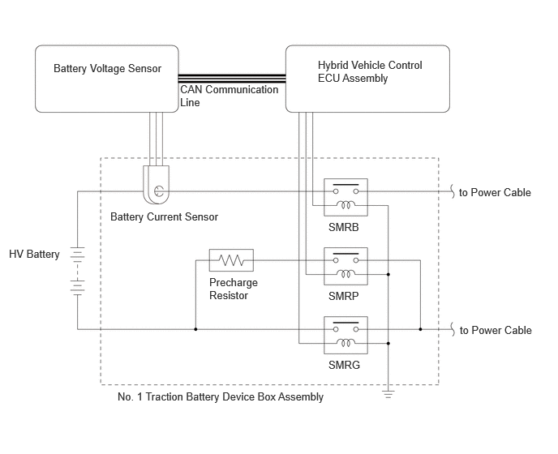(2) The hybrid vehicle control ECU assembly turns the SMRB on, and then turns the SMRP on. After the hybrid vehicle control ECU assembly has turned the SMRG on, the ECU turns the SMRP off. As the controlled current is initially allowed to pass through a resistor in this manner, the contact point in the circuit is protected from damage that could be caused by a rush current.
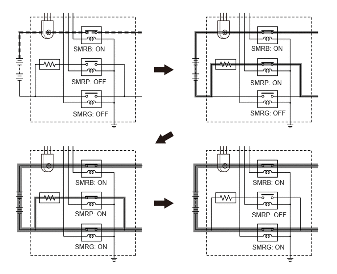(3) First, the hybrid vehicle control ECU assembly turns the SMRG off. After the ECU has determined whether the contact points of the SMRG are stuck, it turns the SMRB off. Subsequently, the hybrid vehicle control ECU assembly turns the SMRP on in order to determine whether the contact points of the SMRB are stuck. Then, the ECU turns the SMRP off.
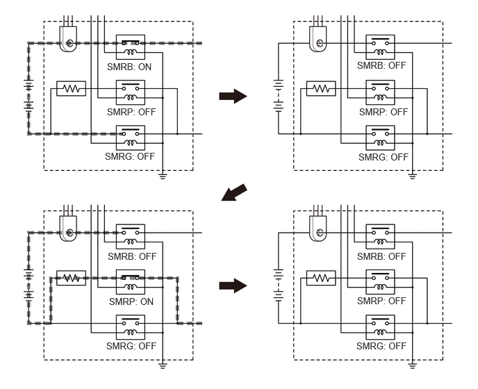(4) If the hybrid vehicle ECU detects that the contact points are stuck, it displays a message on the multi-information display and stores a DTC in memory.
(d) State of Charge (SOC) Control
(1) The hybrid vehicle control ECU assembly calculates the SOC of the HV battery by estimating its charging and discharging amperages, in order to control the SOC. This allows the hybrid system to make control decisions based on the power stored in the battery.
(2) While the vehicle is in motion, the HV battery undergoes repetitive charge/discharge cycles, as the battery becomes discharged by the MG during acceleration and charged by regenerative braking during deceleration. The hybrid vehicle control ECU assembly calculates the SOC based on the amount of HV battery charge/discharge detected by the current sensor. The hybrid vehicle control ECU assembly constantly performs charge/discharge control based on the calculated SOC value in order to maintain the SOC within its target range.

(e) Inverter Coolant Cooling Control
(1) The hybrid vehicle control ECU assembly receives the signal from the temperature sensor for the inverter coolant. Then, the hybrid vehicle control ECU assembly actuates the inverter water pump assembly (with motor), in order to cool the inverter coolant.
(2) If the inverter coolant temperature exceeds a certain level with the engine stopped, the hybrid vehicle control ECU assembly sends a cooling fan operation request signal to the cooling fan with controller motor via the ECM. In response to the signal, the cooling fan with controller motor actuates the cooling fan to restrain the increases in the inverter coolant temperature, ensuring the cooling of the hybrid motor control inverter assembly.
(3) The MG ECU converts the temperature sensor signal into a digital signal and transmits the signal to the hybrid vehicle control ECU assembly via CAN communication.
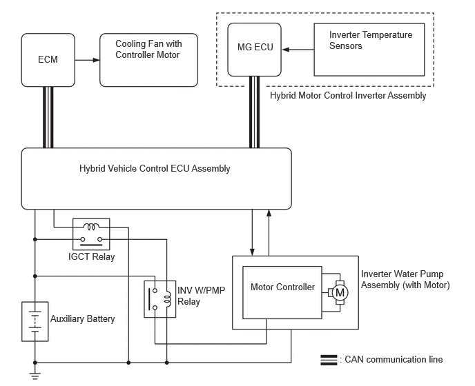(f) HV battery Cooling Control
(1) The battery voltage sensor detects the HV battery temperature and intake air temperature of battery cooling blower assemblies via the 7 temperature sensors in the HV supply battery assembly. Then, the battery voltage sensor steplessly actuates the battery cooling blower assemblies using duty cycle control, in order to maintain the temperature of the HV battery within the specified range.
(2) The battery voltage sensor converts the HV battery related signals (voltage, current and temperature) into digital signals, and transmits them to the hybrid vehicle control ECU assembly via CAN communication.
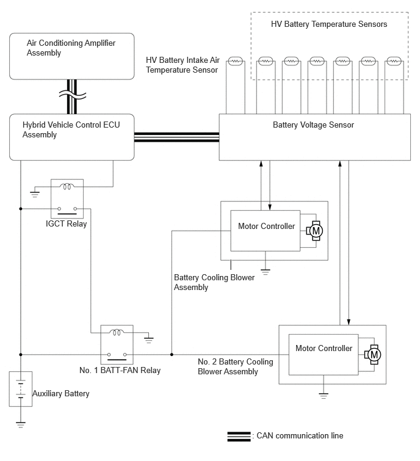(g) Engine Control
(1) The ECM controls the ETCS-i system, fuel injection volume, ignition timing and Dual VVT-i system based on the calculated target engine motive force.
(2) The ECM starts or stops the engine according to the driving conditions.
(3) When a malfunction occurs in the system, the ECM activates the MIL.
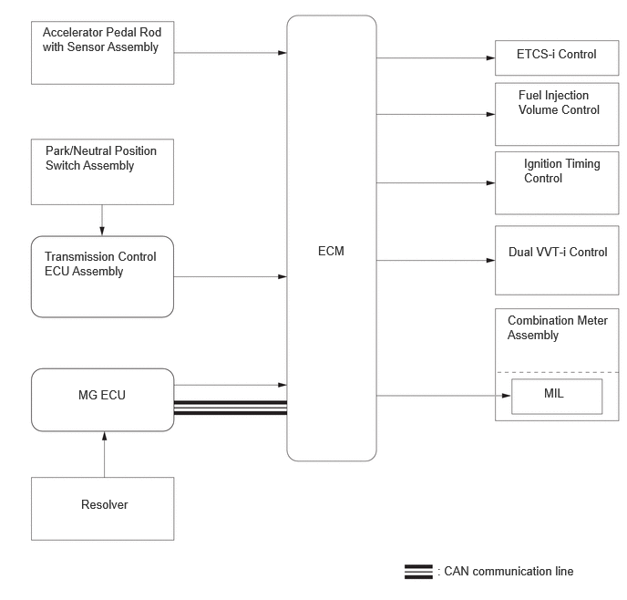(h) Motor Generator Main Control
(1) MG, which is driven by the engine, generates high voltage (alternating current) in order to charge the HV battery. Also, the MG functions as a starter to start the engine.
(2) The MG is driven by electrical power from the HV battery, and it generates motive force.
(3) The MG generates electricity to charge the HV battery during braking (regenerative braking control), or when the accelerator pedal is not being depressed.
(4) The MG ECU, which follows the commands of the ECM, controls the MG via the Power Module (PM), for driving the vehicle. 6 Insulated Gate Bipolar Transistors (IGBTs) switch on and off to control the MG in accordance with operation as either a motor or a generator.
(5) The illustration below describes the basic control when a motor generator functions as a motor.
- The IGBTs switch on and off to supply 3-phase alternating current to the motor generator.
- In order to create the motive force required of the MG as calculated by the ECM, the MG ECU switches the IGBTs on and off and controls the speed, in order to control the speed of the MG. 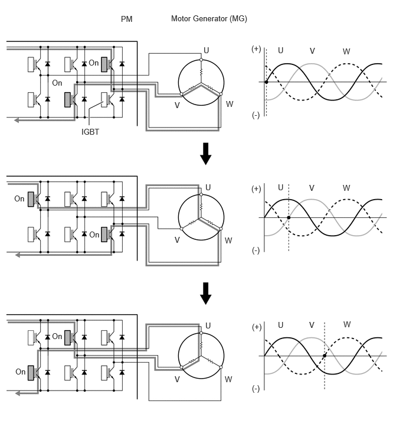
(6) The illustration below describes the basic control used when a motor generator functions as a generator.
- The current that is generated sequentially by the 3 phases of the MG, which is driven by the wheels, is utilized to charge the HV battery. 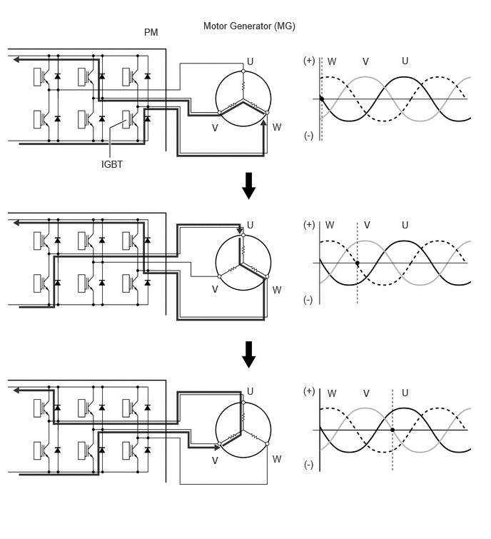
(i) Inverter Control
(1) The inverter converts the direct current from the HV battery into alternating current for the MG, or vice versa, in accordance with the signals provided by the ECM via the MG ECU.
(2) The MG ECU transmits signals to the power transistors in the inverter for switching the U, V and W phases of the stator coils of the MG based on the rotor position information sent by the resolver.
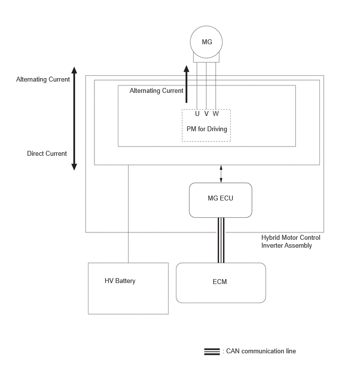(j) DC/DC Converter Control
(1) The DC/DC converter reduces the nominal voltage of the HV battery from DC 288 V to approximately DC 14 V in order to supply electricity to the electrical components, as well as to recharge the auxiliary battery.
(2) In order to regulate the output voltage from the DC/DC converter, the hybrid vehicle control ECU assembly transmits the output voltage request signal to the DC/DC converter in response to the battery state sensor signals.
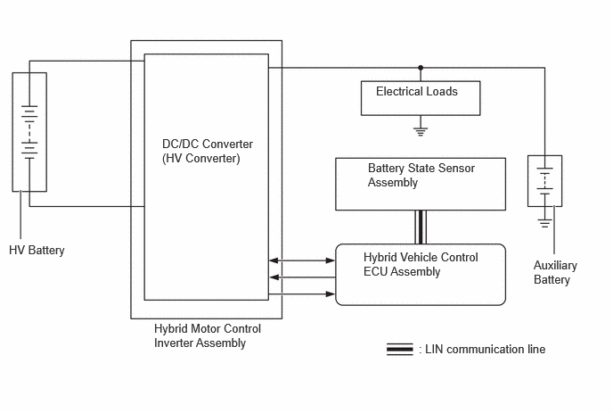(k) Battery Voltage Sensor Control
(1) The battery voltage sensor converts the HV battery related signals (voltage, current and temperature) into digital signals, and transmits them to the hybrid vehicle control ECU assembly via CAN communication. These signals are needed to determine the charge or discharge values that are calculated by the hybrid vehicle control ECU assembly.
(2) A leakage detection circuit is provided in the battery voltage sensor in order to detect any electrical leakage from the HV battery or high voltage circuit.
(3) The battery voltage sensor detects the feedback frequency from the battery cooling blower assembly and No. 2 battery cooling blower assembly, which is needed by the hybrid vehicle control ECU assembly to perform HV battery cooling control. the battery voltage sensor converts the electrical leakage and feedback frequency information into digital signals and transmits them to the hybrid vehicle control ECU assembly via CAN communication.
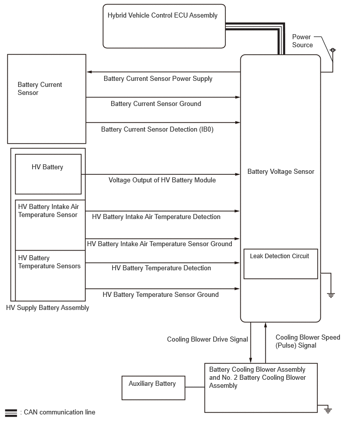(l) Skid Control ECU Control
(1) The No. 2 skid control ECU calculates the total brake force needed based on the information from the No. 1 skid control ECU and the brake pedal stroke sensor assembly signal generated when the driver depresses the brake pedal.
(2) After calculating the total brake force required, the No. 2 skid control ECU sends a regenerative braking force request to the ECM. The ECM replies with the amount of regenerative braking force that is possible.
(3) The ECM uses the MG to create negative torque (deceleration force), carrying out the regenerative braking.
(4) The No. 2 skid control ECU controls the brake actuator and generates wheel cylinder pressure. The pressure that is generated is what remains after the actual regenerative braking control value has been subtracted from the total required brake force.
(5) The No. 2 skid control ECU outputs a request to the ECM to limit motive force while the TRAC or VSC is operating to control wheel spin. The ECM controls the engine and the MG in accordance with the present driving conditions in order to suppress the motive force.
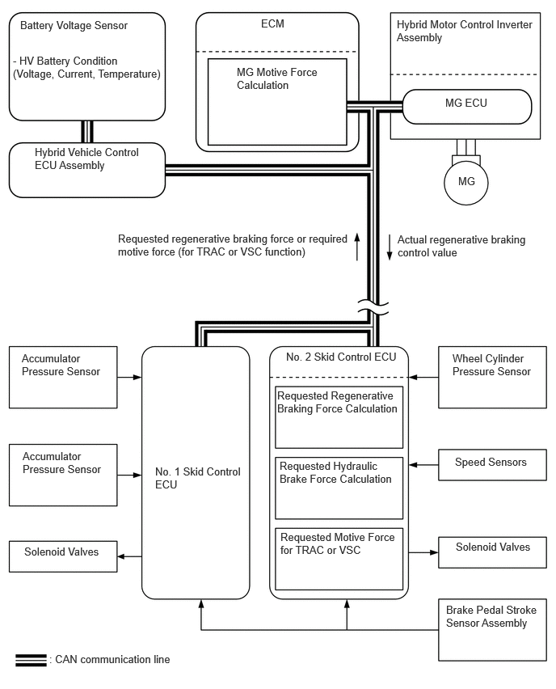(m) During Collision Control
(1) If the vehicle encounters one of the situations described below, the hybrid vehicle control ECU assembly will shut down the power supply by turning the SMRs off, in consideration for safety.
(2) The hybrid vehicle control ECU assembly receives an airbag deployment signal from the airbag ECU assembly during a frontal collision, side collision, side rear collision or rollover. In the event of a rear collision, the airbag ECU assembly also sends a signal.
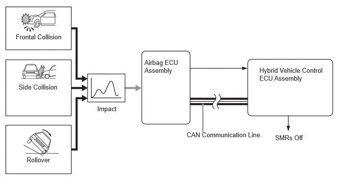FUNCTION
(a) Drive Mode Select
(1) The motive force characteristics for the accelerator opening angle can be changed through the selection of the drive mode according to driver preference.
(2) The drive mode can be switched by operating the drive mode select and turning the dial.
(3) The drive mode is displayed on the combination meter assembly, so that the driver can confirm the selected mode.

|
*A |
Models with AVS |
*B |
Models without AVS |
|
*1 |
Drive Mode Select Switch |
*2 |
Drive Mode Select Dial |
|
*a |
The illustrations shown are example only. |
- |
- |
(4) The characteristics of each drive mode are as follows:
|
Drive Mode |
Outline |
|---|---|
| *: Models with AVS | |
|
NORMAL Mode |
This drive mode provides optimum driveability. |
|
COMFORT Mode* |
This mode adds AVS control to NORMAL mode. The lower damping force range is mainly used, performing control to achieve a comfortable ride. |
|
ECO Mode |
The ECM optimizes fuel economy and driving performance by gently generating motive force in comparison to the accelerator pedal operation. At the same time, it supports eco driving by optimizing the air conditioning performance. |
|
SPORT Mode |
The ECM controls motive force in the intermediate area of accelerator pedal opening to a greater degree than that of Normal mode, thus improving acceleration performance. In addition, engine speed response performance has been improved in the high area of accelerator pedal opening, thus producing a sporty drive. |
|
SPORTS+ Mode* |
In addition to the control when in SPORT S mode, the suspension control system and steering control system have been integrated to shift to SPORT S+ that aims to improve operability and stability without losing comfort or control which enables operation according to the driver's intention. |
(b) Tow Haul Mode Select
(1) The mode can be switched between TOW/HAUL by operating the TOW HAUL switch.

|
*A |
Models with AVS |
*B |
Models without AVS |
|
*1 |
Tow Haul Switch |
- |
- |
|
*a |
The illustrations shown are example only. |
- |
- |
(2) TOW/HAUL improve powertrain responsiveness by constantly operating the engine. The MG can also be used to improve instantaneous acceleration responsiveness and towing performance.
(3) Selecting TOW/HAUL adjusts the accelerator pedal response, improving acceleration performance when towing.
FAIL-SAFE
(a) When a malfunction has been detected, depending on the type of malfunction, the standard values in the hybrid vehicle control ECU assembly and ECM are used to continue the control mode or to disable the hybrid system.
DIAGNOSIS
(a) In the hybrid system, if the hybrid vehicle control ECU assembly, the ECM or the MG ECU detects a malfunction, the hybrid vehicle control ECU assembly, the ECM or the MG ECU records the fault and memorizes the information that relates to the fault. To inform the driver of the malfunction, the ECM illuminates or blinks the MIL and the hybrid vehicle ECU assembly displays a message on the multi-information display.
(b) The hybrid vehicle control ECU assembly, the ECM or the MG ECU will store the respective DTCs of the malfunctions.
(c) The DTCs can be accessed by using the GTS.
(d) For details, refer to the repair manual.